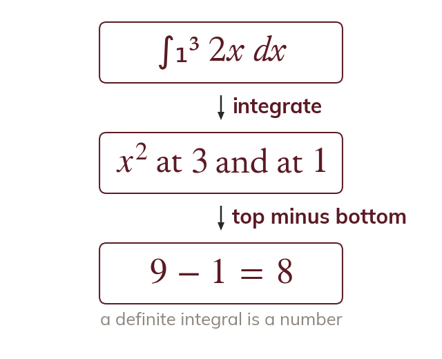
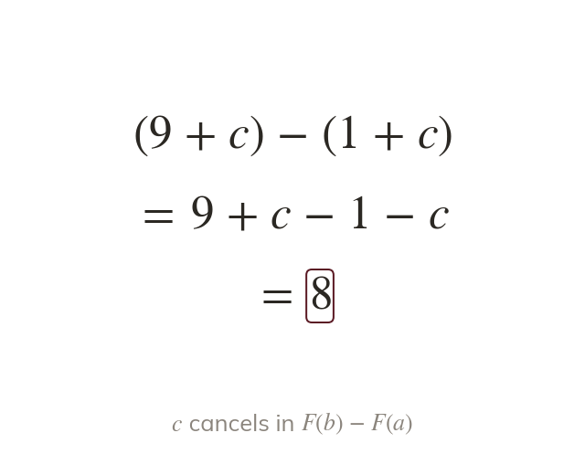
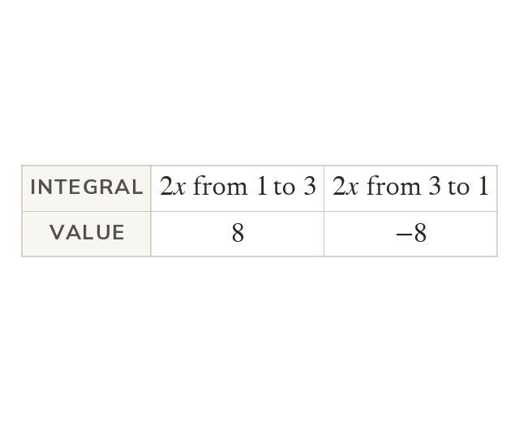
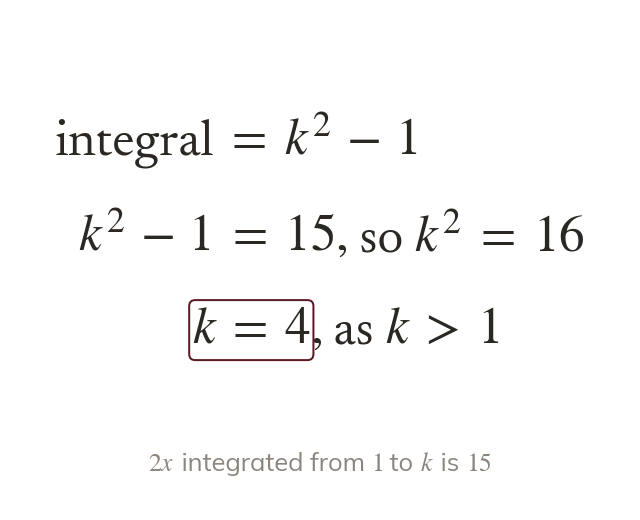
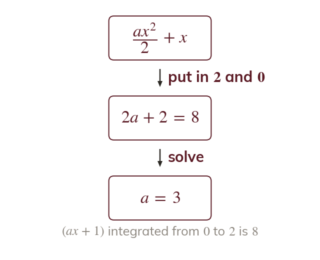
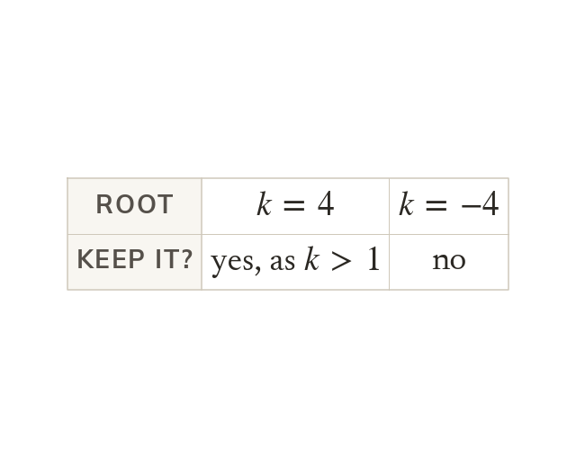

Limits give a number
means integrate, then work out the top limit put in minus the bottom limit put in. For , gives
A definite integral has limits, so the constant cancels and the answer is a number, not a function. Evaluating one is the skill that turns into the area under a curve.
Work down the page at your own pace. Write every answer in your book first, then click to check it.
Read each card, then follow the worked examples one step at a time.

means integrate, then work out the top limit put in minus the bottom limit put in. For , gives

With + the value is which is still
The always cancels, so a definite integral leaves it out.

puts the top limit first. Swapping the limits changes the sign, so
Pick an answer. If it's wrong, the feedback tells you which mistake it was.
Write the blanks in your book first, then tap each one to check.
Read each card, then follow the worked examples one step at a time.

If the integral gives
So and or and a condition such as picks

If integrating gives which is at and at
So and

A quadratic in k has two roots, and the question says which to keep. Put the value back into the integral to check it.
Pick an answer. If it's wrong, the feedback tells you which mistake it was.
Write the blanks in your book first, then tap each one to check.
Finished? Next lesson: 12.P13.5 Areas Under Curves.
For each skill, tap the one that is true for you today. Your Revise pages start with anything you mark Not yet.
Your ratings are saved on this device only.
Log in, then search for a code to practise that skill.